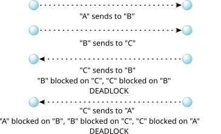

Deliver an event through a channel
#include <sys/neutrino.h>
int MsgDeliverEvent( rcvid_t rcvid,
const struct sigevent* event );
int MsgDeliverEvent_r( rcvid_t rcvid,
const struct sigevent* event );
| Value | Meaning | Event registration |
|---|---|---|
| > 0 | The client identified by the value returned to the server when it receives a message from a client using MsgReceive*(). | The client must have registered the event by calling MsgRegisterEvent() with a coid to the server passed as the connection ID (coid). |
| 0 | Deliver the event to the active thread (see below). | The event doesn't need to be registered. |
| < 0 | Deliver the event to the thread with a thread ID that is the absolute value of rcvid. | The event doesn't need to be registered. |
libc
Use the -l c option to qcc to link against this library. This library is usually included automatically.
The MsgDeliverEvent() and MsgDeliverEvent_r() kernel calls deliver an event from a server to a client through a channel connection. They're typically used to perform async IO and async event notification to clients that don't want to block on a server.
These functions are identical except in the way they indicate errors. See the Returns section for details.
Although the server can explicitly send any event it desires, it's more typical for the server to receive a struct sigevent in a message from the client that already contains this data. The message also contains information for the server indicating the conditions on when to notify the client with the event. The server then saves the rcvid from MsgReceive*() and the event from the message without needing to examine the event in any way. When the trigger conditions are met in the server, such as data becoming available, the server calls MsgDeliverEvent() with the saved rcvid and event.
The sigevent can contain the handle for a secure event that the client registered
by calling MsgRegisterEvent(). For more information, see Events
in
the Interprocess Communication (IPC)
chapter of the System Architecture
guide.
You can use the SIGEV_SIGNAL set of notifications to create an asynchronous design in which the client is interrupted when the event occurs. The client can make this synchronous by using the SignalWaitinfo() kernel call to wait for the signal. Where possible, you should use an event-driven synchronous design that's based on SIGEV_PULSE. In this case, the client sends messages to servers, and requests event notification via a pulse.
The notify types of SIGEV_UNBLOCK and SIGEV_INTR are allowed, but aren't very useful with MsgDeliverEvent(). SIGEV_UNBLOCK is typically used by the TimerTimeout() kernel call, and SIGEV_INTR is typically used with the InterruptWait() kernel call.
You should use MsgDeliverEvent() when two processes need to
communicate with each other without the possibility of
deadlock. The blocking nature of MsgSend*() introduces a
hierarchy of processes in which sends
flow one way and
replies
the other way.
In the following diagram, processes at the A level can send to processes at the B or C level. Processes at the B level can send to the C level but they should never send to the A level. Likewise, processes at the C level can never send to those at the A or B level. To A, B and C are servers. To B, A is a client and C is a server.
These hierarchies are simple to establish and ensure a clean deadlock-free design. If these rules are broken then deadlock can occur as shown below:

There are common situations which require communication to flow backwards through the hierarchy. For example, A sends to B requesting notification when data is available. B immediately replies to A. At some point in the future, B will have the data A requested and will inform A. B can't send a message to A because this might result in deadlock if A decided to send to B at the same time.
The solution is to have B use a nonblocking MsgDeliverEvent() to inform A. A receives this pulse and sends a message to B requesting the data. B then replies with the data. This is the basis for asynchronous IO. Clients send to servers and where necessary, servers use pulses to request clients to resend to them as needed. This is illustrated below:
| Message | Use |
|---|---|
| A sends to B | Async IO request |
| B replies to A | Request acknowledged |
| B sends pulse to A | Requested data available |
| A sends to B | Request for the data |
| B replies to A | Reply with data |
Sometimes it might be convenient for a library that doesn't have the rcvid to deliver the event instead of handing it off to the server. The library could interpret the sigevent itself, but this duplicates what the kernel already knows how to do. Instead, the library can call MsgDeliverEvent() with a rcvid of 0. The kernel then creates an artificial rcvid that references the calling thread—as if a server had received the message from it via MsgReceive()—and then the rest of the MsgDeliverEvent() proceeds normally.
MsgDeliverEvent() checks the event before delivering it, and uses the
error codes listed below to indicate any problems found. For SIGEV_PULSE
events, the priority of the pulse must be in the range for the target process, or that
process must have the PROCMGR_AID_PRIORITY ability enabled (see procmgr_ability()). If procnto was started with an s
appended to the
-P option, then out-of-range priority requests use the maximum allowed
value instead of resulting in an error. A priority of 0 (which is reserved for the idle
thread) is changed to 1.
Blocking states
None.
The only difference between these functions is the way they indicate errors:
The following example demonstrates how a client can request a server to notify it with a pulse at a later time (in this case, after the server has slept for two seconds). The server side notifies the client using MsgDeliverEvent().
Here's the header file that's used by client.c and server.c:
struct my_msg
{
short type;
struct sigevent event;
};
#define MY_PULSE_CODE _PULSE_CODE_MINAVAIL+5
#define MSG_GIVE_PULSE _IO_MAX+4
#define MY_SERV "my_server_name"
Here's the client side that fills in a struct sigevent and then receives a pulse:
/* client.c */
#include <stdio.h>
#include <stdlib.h>
#include <unistd.h>
#include <errno.h>
#include <sys/neutrino.h>
#include <sys/iomsg.h>
#include <sys/iofunc.h>
#include <sys/dispatch.h>
#include "my_hdr.h"
int main( int argc, char **argv)
{
int chid, coid, srv_coid, rc;
struct my_msg msg;
struct _pulse pulse;
/* we need a channel to receive the pulse notification on */
chid = ChannelCreate( 0 );
/* and we need a connection to that channel for the pulse to be
delivered on */
coid = ConnectAttach( 0, 0, chid, _NTO_SIDE_CHANNEL, 0 );
/* find the server */
if ( (srv_coid = name_open( MY_SERV, 0 )) == -1)
{
printf("failed to find server, errno %d\n", errno );
exit(1);
}
/* fill in the event structure for a pulse */
SIGEV_PULSE_INIT( &msg.event, coid, SIGEV_PULSE_PRIO_INHERIT,
MY_PULSE_CODE, 0 );
/* register the event with the side-channel connection id
from name_open() */
MsgRegisterEvent(&msg.event, srv_coid);
msg.type = MSG_GIVE_PULSE;
/* give the pulse event we initialized above to the server for
later delivery */
MsgSend( srv_coid, &msg, sizeof(msg), NULL, 0 );
/* wait for the pulse from the server */
rc = MsgReceivePulse( chid, &pulse, sizeof( pulse ), NULL );
printf("got pulse with code %d, waiting for %d\n", pulse.code,
MY_PULSE_CODE );
return 0;
}
Here's the server side that delivers the pulse defined by the struct sigevent:
/* server.c */
#include <stdio.h>
#include <stdlib.h>
#include <unistd.h>
#include <errno.h>
#include <sys/neutrino.h>
#include <sys/iomsg.h>
#include <sys/iofunc.h>
#include <sys/dispatch.h>
#include "my_hdr.h"
int main(int argc, char **argv) {
rcvid_t rcvid;
union {
struct my_msg mine;
struct _pulse pulse;
} msg;
name_attach_t *attach;
/* Attach the name the client will use to find us. */
/* Our channel will be in the attach structure */
if ((attach = name_attach(NULL, MY_SERV, 0)) == NULL) {
printf("server:failed to attach name, errno %d\n", errno);
exit(1);
}
/* Wait for the message from the client. */
for( ;; ) {
rcvid = MsgReceive(attach->chid, &msg, sizeof(msg), NULL);
switch(msg.mine.type) {
case _PULSE_CODE_DISCONNECT:
ConnectDetach(msg.pulse.scoid);
break;
case _IO_CONNECT:
MsgReply(rcvid, 0, NULL, 0);
break;
case MSG_GIVE_PULSE:
/* Wait until it is time to notify the client */
sleep(2);
/*
* Deliver notification to client that client
* requested
*/
MsgDeliverEvent(rcvid, &msg.mine.event);
printf("server:delivered event\n");
return 0;
default:
printf("server: unexpected message %d\n", msg.mine.type);
return 0;
}
}
return 0;
}
In the case of a pulse event, if the server faults on delivery, the pulse is either lost or an error is returned.